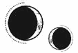

CAPÍTULO 10
Helena estaba sentada junto a la ventana de su habitación e intentaba, sin éxito, hallar alguna pizca de resonancia entre los dedos. Si se concentraba con todas sus fuerzas, a veces creía percibir algún destello fugaz.
Se puso en pie y se acercó al ventanal. Los días eran cortos y demasiado oscuros; el sol se ocultaba al mediodía.
Apretó los puños, cerró los ojos con intensidad, y luego extendió los dedos, apoyándolos sobre el entramado de metal que cubría las ventanas heladas. Se esforzó hasta que la vista se le nubló.
Nada.
Jugueteó con el grillete que llevaba en la muñeca y solo paró cuando notó que lo que tenía clavado entre los huesos se retorcía como una advertencia.
A pesar de siglos de estudios alquímicos, todavía se desconocían muchos aspectos sobre la resonancia.
Antes de la Fe, existió un culto a la alquimia consagrado a una versión masculina de Lumitia.
El culto sostenía que la humanidad fue lo primero creado mediante la alquimia. El dios Sol nos formó y dispersó por la tierra en los albores del tiempo. Sin embargo, los seres humanos que creó eran modestos y corruptibles, como la mayoría de los metales innobles, y Sol no era capaz de mejorarlos por mucho que lo intentara. Entonces llegó Lumen, quien manejaba la alquimia de una forma mucho más cruel. Lumen unió los cuatro elementos: fuego, tierra, agua y aire, usando el mundo como alambique y a las criaturas que lo poblaban como materia prima. El Gran Desastre, ocurrido hacía dos mil años, que estuvo a punto de destrozar tanto la tierra como a la humanidad, fue consecuencia directa de esos procesos de alquimización.
Primero, el fuego cayó sobre la tierra: la calcinación. Las mareas desbordantes que engulleron las grandes ciudades fueron la disolución. Los terremotos que partieron incluso las montañas, la separación. Y el resultado cuando los supervivientes emergieron de la destrucción, la conjunción. Las plagas, las enfermedades y la hambruna que les siguió, la fermentación. La cantidad de muertos, tan descomunal que la humanidad estuvo a punto de desaparecer, fue la destilación. Y, por último, la culminación, el resultado del gran experimento de Lumen, que hizo que la humanidad manifestara la resonancia alquímica, se denominó coagulación.
Este proceso aparecía en los primeros escritos de Cetus como el método de la alquimización.
Tanto la Fe como la Academia rechazaron casi por completo este culto, aunque sí aceptaron a Lumen como Lumitia, y la reconocieron como una de las divinidades elementales de la Quintaesencia. Sin embargo, la Fe sostenía con fervor que la resonancia no era un reflejo de la pureza espiritual, sino simplemente una manifestación de ella. Todos los humanos tenían defectos, ya fueran alquimistas o no, y, por lo tanto, debían buscar la purificación. Un paso que Cetus, convenientemente, no incluyó en su proceso alquímico.
Además, no era difícil predecir dónde surgiría un mayor número de alquimistas, pues siempre coincidía con las regiones que albergaban mayores yacimientos de lumitio. La mina más grande del continente norteño se encontraba en las montañas, río arriba de Paladia, y el número de niños que nacían en la ciudad con una resonancia cuantificable era más del doble que en los países vecinos.
Las minas de lumitio de Paladia siempre complicaron su gobernanza. Solo quienes poseían resonancia podían extraer el lumitio con seguridad; de lo contrario, aparecían rápidamente los síntomas y las enfermedades debilitantes. No obstante, el trabajo se limitaba a una única generación. Los hijos de los mineros casi siempre nacían con una resonancia cuantificable. Paladia nunca dejaba de recibir nuevos mineros que trabajaran en las minas, lo que provocaba un aumento constante de la población. Ese era el motivo por el que la ciudad Estado estaba tan poblada.
Los gremios dependían del lumitio para funcionar, pero detestaban la competitividad que generaban las minas. La Academia de Alquimia llevaba décadas operando a su máxima capacidad, lo que limitaba el número de certificados alquímicos emitidos cada año. Sin certificado, nadie podía declararse alquimista profesional ni usar la resonancia sin la presencia de un supervisor acreditado.
Los gremios querían que tanto los certificados como las admisiones a la Academia de Alquimia siguieran siendo limitados. Primero, porque incrementaban el valor de sus propias credenciales, y, segundo, porque aquellos alquimistas que carecían de formación tradicional salían más rentables para contratarlos en las fábricas. Sin embargo, al mismo tiempo, los gremios también querían que sus herederos fueran los únicos que accedieran a la Academia, independientemente de quién tuviera mayor resonancia o aptitud.
Esta tensión había dado lugar a un ciclo perpetuo en el que todo el mundo consideraba injustas las actuales circunstancias, pero nadie sabía cómo solucionarlo. El principado Helios lo había intentado durante décadas y solo había logrado provocar disturbios masivos y protestas laborales.
Los inmarcesibles parecían haber encontrado una solución al problema de las minas utilizando necrómatas, lo que evitaba tanto la escasez de lumitio como la creciente competencia. No obstante, esto trajo consigo una amarga ironía: la guerra había diezmado tanto la población de alquimistas que ahora necesitaban un programa de reproducción para aumentarla.
Helena entrecerró los ojos. Quería ver mejor el tubo que le atravesaba la muñeca para desentrañar qué era. Parecía estar revestido de un material cerámico, lo que implicaba que se podía romper, aunque lo más probable era que el metal fuese corrosivo.
Pero el lumitio no era corrosivo. Se consideraba un metal noble e incorruptible, justo por debajo del oro, pero superior a la plata, que se deslustraba. ¿Sería una aleación de lumitio?
No podía recordar muchas aleaciones que incluyeran lumitio, ya que principalmente se usaba en emanaciones destinadas a aumentar o estabilizar la resonancia de los otros metales.
Sospechaba que la supresión de la resonancia debía de ser una alquimia que provenía del Este. El Imperio Oriental siempre fue receloso a la hora de compartir sus conocimientos de alquimia, y había sido Shiseo quien le colocó los grilletes.
Todavía estaba reflexionando sobre esto cuando se abrió la puerta. Miró por encima del hombro, convencida de que sería Ferron, pero se encontró con un desconocido que la observaba con el rostro iluminado.
Se deslizó dentro de la habitación, cerró la puerta sin hacer ruido y miró a su alrededor, como si esperara que alguien lo detuviera en algún momento. Al ver que no ocurría nada, esbozó una sonrisa lenta.
Se acercó a Helena rápidamente pero en silencio.
Tenía una constitución fuerte, el cabello rubio como el trigo y la cara cuadrada. Vestía una levita azul oscuro y una capa con bordados geométricos, y también llevaba un pañuelo de un burdeos intenso alrededor del cuello.
A Helena la invadió un terror absoluto.
Nunca se le había ocurrido la posibilidad de que un desconocido pudiera colarse en su habitación. Le temblaron las manos, lo que le provocó dolor en los brazos.
El desconocido se detuvo.
—No me recuerdas —dijo con incredulidad. Había una leve ofensa en su tono, como si Helena debiera haberlo conocido al instante.
Helena lo observó fijamente, esforzándose por descubrir quién era. Su voz le sonaba vagamente familiar, pero no lograba ubicar dónde la había escuchado antes.
La ansiedad se abrió paso por el semblante del desconocido, al igual que la sensación de triunfo. Se acercó y extendió la mano hacia ella con los dedos curvados.
Entonces, la puerta se abrió con tanta fuerza que la habitación entera pareció sacudirse.
—¿Te has perdido, Lancaster? —dijo Ferron al entrar, con los ojos plateados brillando de ira.
Helena sintió un alivio inmenso.
Lancaster se irguió de inmediato y toda la urgencia con la que había entrado desapareció en cuanto se volvió para encarar a Ferron. Se encogió de hombros. Ferron pasó a su lado sin mirarlo siquiera.
—Solo estaba explorando tu mansión —respondió—. Sentí curiosidad al verla.
Señaló a Helena con la cabeza, pero Ferron se interpuso entre ambos. Sin pensarlo, Helena se encogió al ver a Ferron. Estaba tan cerca que podía oler la esencia de junípero en sus ropas.
—No está aquí para entretenerte —replicó Ferron en tono glacial—. Tendrás que buscarte a otra persona con la que divertirte. Seguro que no te será difícil.
Lancaster se rio.
—Pero si la has sacado hasta en el periódico y todo. —Torció la boca en una mueca dolida—. ¿Ni siquiera le permites tener visitas?
—Pues no —respondió Ferron después de mirar a Helena con indiferencia—. Y, en el futuro, si tienes curiosidad sobre algo que me pertenece, pregúntame. Volvamos a la fiesta. Seguro que Aurelia nos echa en falta.
Posó una mano enguantada en el hombro de Lancaster y lo guio con firmeza hacia la puerta. Lancaster miró a Helena por encima del hombro; de nuevo le brillaban los ojos, como si estuviera desesperado por contarle algo.
Helena observó cómo atravesaba la puerta y trató de ubicar el nombre.
Lancaster.
Un apellido gremial. Níquel. Sí, el gremio del níquel. Había ido a clase con un Lancaster, ¿o tal vez iba a un curso superior? Erik Lancaster.
¿Por qué pensaba que Helena iba a reconocerlo?
Cuando se puso en pie para pensar más en ese asunto, le llegó el leve sonido de una música que se colaba por la puerta cerrada. Cayó entonces en la cuenta de por qué había alguien en la casa. Los Ferron estaban celebrando una fiesta por la víspera del solsticio.
Helena no tenía ni idea de que pensaran celebrar nada. Las zonas de la casa que había visto estaban tan sucias que a ella le habría dado vergüenza invitar a nadie. Sin embargo, el solsticio de invierno era uno de los festivos más importantes de Paladia y, teniendo en cuenta lo relacionado que estaba el solsticio de verano con los Holdfast, seguramente se hubiera convertido en el único festivo importante que se les permitía celebrar a los inmarcesibles.
Se acercó a la puerta. A pesar del peligro, ardía de curiosidad. Sabía que habría inmarcesibles y liches entre los invitados. Todos ellos, aspirantes o, al menos, simpatizantes del régimen.
Tal vez fuera el mejor momento para que la mataran. Agarró el pomo, pero se detuvo; lo más probable sería que no la mataran, sino que se limitaran a torturarla. Vaciló. En ese caso, a menos que Ferron interviniera, no podría hacer mucho para defenderse.
Lo que más la alteraba era el alivio que había sentido de forma instintiva al verlo, mucho más de lo que estaba dispuesta a admitir, pero pensaría en ello si se quedaba toda la noche en su habitación.
Abrió la puerta.
Aunque tras explorar toda la casa cuando estaba medicada ya era capaz de atravesar las sombras del pasillo sin sucumbir al pánico, todavía tenía que respirar hondo varias veces antes de atreverse a cruzar el umbral de la puerta.
Se dirigió al ala principal.
El sonido de la música sonaba cada vez más fuerte. Se detuvo para asegurarse de que no hubiera nadie a la vista.
Casi no reconoció la casa. Las luces y las lámparas de araña estaban encendidas y resplandecientes; todo brillaba de una forma que Helena jamás imaginó que sería posible en Puntaférreo.
Recorrió el pasillo, pero, antes de doblar la esquina, oyó el frufrú de una tela y una risilla ahogada de una mujer. Volvió a esconderse y contuvo la respiración, camuflada entre las sombras y tratando de no recrearse demasiado en cómo la envolvían. Aurelia giró la esquina a toda velocidad. Llevaba a alguien de la mano y lo condujo hasta la penumbra al fondo del pasillo.
No era Ferron.
Helena apenas distinguía detalles desde donde se encontraba, pero la constitución y el cabello eran inconfundibles.
Aurelia se apoyó en la pared y soltó una risotada ansiosa, y el hombre se le echó encima hasta que Helena dejó de verla. Oyó más movimientos de telas y, después, las risillas dieron paso a unos jadeos entrecortados, que se transformaron en susurros, gemidos y sonoros gruñidos.
Helena se quedó paralizada, sin saber qué hacer, a medio camino entre el horror y la incredulidad, hasta que se dio cuenta de algo: Ferron vería la aventura de su mujer cuando revisara los recuerdos de Helena.
Se apartó de las sombras y huyó en silencio escaleras arriba.
Como su ruta habitual estaba bloqueada, Helena se resignó a observarlo todo desde la planta de arriba. El murmullo de las voces llegaba hasta allí como si fuera una colmena de abejas. Sin duda, era una gran fiesta.
Durante los días que estuvo medicada, exploró la casa y descubrió un salón de baile abandonado. En el tercer piso había una escalera de caracol estrecha que desembocaba en una terraza desde la que se veía el salón de baile y por la que accedían a la lámpara de araña para limpiarla.
Subió esa escalera y se arrodilló para asomarse por la barandilla. Los mechones de pelo suelto le cayeron alrededor del rostro. Comprobó irritada que había una red de seguridad por encima del espacio abierto, como si Ferron hubiera previsto de alguna forma que iría allí para intentar suicidarse durante su fiesta. Helena ni siquiera se lo había planteado, pero le molestó que boicoteara sus intentos antes de tiempo.
Miró más allá de la red. El salón de baile estaba lleno de gente y de cadáveres. Todos lucían resplandecientes, cubiertos de telas lujosas, joyas y riquezas. Incluso desde la distancia, distinguía los ropajes ricos en bordados con hilos de plata fina como la luz de la luna, y también platino y oro reluciendo entre las gemas y los metros de tela de color intenso. Los invitados exhibían una fortuna desbordante.
La alta sociedad de Nueva Paladia. También había decenas de liches, aunque la palidez cerosa de la piel y las escleróticas amarillentas delataban la muerte de sus cuerpos. Mientras ella lo contemplaba todo, empezó a sospechar que había gente viva que se había maquillado y engrasado la piel para imitarlos, como si fuera algo a lo que aspirar.
Había dos chicas que seguramente eran hermanas. La más joven tenía los rasgos afilados y la mirada astuta, mientras que la mayor parecía haber salido del mismo molde, pero suavizado hasta cierto punto, con los rasgos desgastados como una estatua a la intemperie.
La chica mayor se había aplicado un maquillaje blanco azulado en la piel y no parecía muy interesada en la fiesta. Cuando la gente quería hablar con ella, la ignoraba. A veces se apartaba como si la arrastrase una corriente invisible, y la hermana joven dejaba inmediatamente de hablar para estar con ella y la trataba con mimo. Cogía comida de las bandejas que pasaban junto a ellas para dárselo a su hermana como si fuera un pajarillo y le sostenía la mano para mantenerla cerca.
Qué extraña pareja, pensó.
Helena también vio a Stroud y a Mandl. Era evidente que Mandl había hecho uso de la vivemancia para mejorar su aspecto. El cadáver ya no presentaba signos visibles de putrefacción. Aún se transparentaban las venas negras a través de la piel pálida, pero parecía que las había acentuado, como si quisiera llamar la atención.
Había varios fotógrafos con cámaras enormes. Continuamente se veían flashes como pequeñas explosiones cada vez que querían captar el ambiente de la sala.
Helena reconoció al gobernador, Fabian Greenfinch, al que habían nombrado director del Concejo de Gremios durante la «reforma».
Buscó a Ferron, al que encontró al otro lado del salón. Fue como distinguir a una pantera en medio de una bandada de pájaros exóticos.
Iba vestido de negro, como siempre, lo que acentuaba todavía más el color plateado de su pelo y de su piel. No era el mismo gris que el de los liches y sus imitadores, sino que parecía brillar. Había algo especialmente extraño en su apariencia.
—¡El año nuevo está a punto de llegar! —exclamó una mujer con la cara pintada de gris, dando vueltas sobre sí misma. Dejó escapar una risilla histriónica y levantó un cáliz de cristal sobre su cabeza, pero acabó derramándolo sobre su propio vestido y el suelo.
Aurelia regresó al salón. También llevaba un vestido negro, bordado con hilos plateados en vez del hierro que solía utilizar, como si quisiera parecerse más a su marido. El corpiño tenía relieve, como si fuera una armadura escamosa, y las mangas largas lucían unos bordados geométricos en hilo plateado. Además, se había puesto unos anillos de alquimia argéntea que estilizaban todavía más sus dedos.
Aun así, tenía un aspecto ligeramente desaliñado. El pintalabios estaba algo emborronado, difuminando la comisura de sus labios, y la falda mostraba unas arrugas extrañas. Caminó hasta encontrar a Ferron con una expresión de soberbia y, con gesto decidido, se dispuso a enderezarle el cuello de la camisa, acercándolo hacia ella en el proceso.
Ferron miró fijamente a su mujer sin inmutarse.
—¡Diez! ¡Nueve! ¡Ocho! ¡Siete! —empezó a corear todo el salón, haciendo la cuenta atrás para el solsticio y el nuevo año que se proclamaba.
Conforme los números iban bajando, Ferron pasó el pulgar por la boca de su mujer. Al llegar al cero, se inclinó y posó los labios sobre los de Aurelia. Entonces se encendió el flash de una cámara y el salón estalló en vítores, besos y brindis.
Los labios de Ferron permanecieron sobre los de Aurelia, pero, mientras la besaba, alzó la vista y miró directamente a Helena.
Esta dio un paso atrás, sin aliento y paralizada.
Sintió cómo se le encogía el estómago y el corazón le empezó a retumbar hasta que la sangre rugía en los oídos. Quiso dar marcha atrás, desaparecer, pero estaba atrapada en esa mirada fría y plateada.
No apartó la vista hasta que Aurelia interrumpió el beso y se giró. Al instante, dejó caer los párpados, compuso una sonrisa falsa e indulgente, y miró a su alrededor aplaudiendo con entusiasmo. Cuando uno de los camareros muertos se le acercó con una bandeja de copas, cogió una de champán y vertió el contenido en su boca como si fuera un enjuague bucal.
Helena se relajó y se llevó las manos al pecho para calmar su corazón.
—Y ahora —exclamó una voz que interrumpió el murmullo de las conversaciones—, un poco de entretenimiento para inaugurar el año nuevo.
La música se detuvo de golpe cuando los músicos miraron a su alrededor, sin saber si debían seguir tocando.
Helena siguió la voz y vislumbró a un hombre sonriente con unas largas patillas que iba vestido tan recargado como los demás invitados. Venía desde el fondo del salón acompañado de varias personas: un hombre, una mujer y tres hijos de distintas edades, todos encadenados juntos.
Era evidente que no eran invitados; llevaban una ropa demasiado sencilla y estaban absolutamente aterrorizados.
El orador se volvió a la multitud que lo observaba y señaló a los prisioneros.
—Estos son los últimos familiares supervivientes de una de las familias nobles de la Llama Eterna.
La conmoción se abrió paso por el salón. Helena examinó los rostros de los encadenados, pero no los reconoció.
—Sí, son familiares lejanos, pero tuvieron mucho cuidado de ocultar esa conexión tan ilustre, ¿verdad? —Se giró hacia los encadenados y los señaló con un dedo.
—Por favor… —Era el padre quien hablaba—. La abuela de mi mujer era un lapsus, no tenemos…
Antes de que pudiera terminar, el padre recibió una bofetada en la cara con una mano llena de joyas que le hizo perder el equilibrio y, al caer al suelo, arrastró consigo a toda su familia. Se quedó ahí tirado, con un lado del rostro lleno de heridas.
—Te ordené que no hablaras. Me estás estropeando la diversión. —La voz del orador sonaba casi cantarina—. Ahora bien, sé que todos querréis participar, pero yo creo que es mejor elegir el orden y hacerlo uno a uno. Será mejor empezar por el más pequeño. ¿O… lo dejamos para el final? —Miró expectante a su alrededor, como si quisiera discernir qué pensaba la gente.
—Durant. —La voz de Ferron era gélida—. Te dije que no lo hicieras.
Durant se dio la vuelta. Pareció querer ganar algo de tiempo pasándose los dedos por las mejillas y peinándose las patillas antes de mirar a Ferron. Todo el mundo contuvo el aliento.
—Oh, vamos, será divertido y, además, se lo merecen. La ley exige que todos los ciudadanos desvelen cualquier relación con la Llama Eterna. Ellos no lo hicieron. Tenemos que dar ejemplo.
—Entonces serán ejecutados formalmente —replicó Ferron—. No quiero que lo que tú consideras un entretenimiento manche el mármol.
—Venga ya, es la forma perfecta de empezar el año, enterrando hasta el último de ellos. Todo el mundo quiere verlos morir. ¿Vas a ser antipático y decepcionar a todos tus invitados?
Ferron puso los ojos en blanco.
—Muy bien.
Antes de que Durant pudiera reaccionar, Ferron dio un paso al frente y le partió el cuello al prisionero más joven, un chico de diez o doce años. El crujido resonó hasta donde Helena lo observaba todo con horror.
La madre gritó y se abalanzó para sostener a su hijo en cuanto Ferron lo mató. Acto seguido, Ferron colocó las manos alrededor de su cuello y también se lo partió.
En menos de un minuto, toda la familia yacía muerta y los cuerpos quedaron desperdigados por el suelo, aún unidos por las cadenas.
Había sucedido tan deprisa que todos los presentes se habían quedado conmocionados, incapaces de asimilar que ya había terminado. Helena no podía creerlo. Parecía imposible que algo así ocurriera sin previo aviso. Cinco personas.
Ferron ni siquiera había usado la resonancia o un arma, solo sus manos.
El Sumo Inquisidor se irguió y se acomodó los puños con un movimiento de muñeca.
—Ahora es obligatorio que las ejecuciones sean limpias, Durant. Su Eminencia lo ha dejado muy claro. Espero que no quisieras saltarte la ley aquí, en mi propiedad, y delante de nuestro ilustre gobernador y de una decena de periodistas.
Ferron le dio una palmadita en el hombro a Durant, sin inmutarse, como si no hubiera hecho nada. Levantó dos dedos y, con un gesto, acudieron un puñado de sirvientes que se abrieron paso entre la aturdida multitud para llevarse los cuerpos. Durant se quedó ahí pasmado como un niño al que le quitan su juguete.
Cuando la multitud despertó del estupor, los murmullos rompieron el silencio. Los músicos volvieron a tocar con cierta vacilación y, tras unos instantes de duda, la fiesta siguió su curso.
En unos minutos, fue como si hubieran olvidado las muertes.
Helena estuvo a punto de irse. No quería presenciar lo que pudiera suceder a continuación, pero también le daba miedo perderse algo importante. Llevaba demasiado tiempo apartada de todo.
La fiesta se prolongó hasta el amanecer, aunque los invitados fueron disminuyendo cuando aquellos que trabajaban al día siguiente se excusaron y se marcharon. Al final, solo quedaron los más adinerados. Helena intentó tomar nota de todo e identificar todas las caras que le fuera posible. Buscó momentos de tensión o familiaridad, trató de entender la jerarquía social existente.
Desde arriba, donde las palabras apenas llegaban, le resultaba más fácil detectar mentiras. Se limitó a observar cómo se comportaban y a percibir las contradicciones entre sus semblantes y sus gestos inconscientes. Al final, era capaz incluso de distinguir a los inmarcesibles, ya que despertaban cierta timidez, incluso después de conversaciones breves.
Ferron también vigilaba al gentío y solo conversaba cuando alguien se le acercaba. No socializaba con los demás ni buscaba a nadie. Más bien parecía que todo el salón giraba a su alrededor.
Para Helena, cada vez era más evidente quiénes sabían que Ferron era el Sumo Inquisidor y quiénes quedaban al margen. Había quien se le acercaba mostrando reverencia y respeto, mientras que algunos de los liches que le hablaron parecían especialmente molestos. Atreus no apareció por allí en ningún momento, si es que aún seguía en el cuerpo de Crowther.
Ferron sonreía de una forma que no se reflejaba en sus ojos y participaba en numerosas charlas triviales como si fuera un gobernante benevolente. A Helena, que no oía lo que decía y se limitaba a observarlo desde la distancia, le parecía que estaba increíblemente aburrido.
Los primeros albores del día se colaron por las ventanas cuando los últimos invitados empezaron a marcharse.
Helena se dio la vuelta para regresar a su habitación y al hacerlo casi le dio un infarto. Una de las criadas estaba esperando en silencio junto a la escalera, vigilándola. Era una criada de mayor edad, una de las escoltas habituales de Helena. No era una empleada doméstica, sino que parecía tener algo más de rango. Helena había estado tan absorta con la fiesta que ni siquiera supo que la criada se había percatado de su presencia.
De camino a su habitación, se detuvieron al escuchar una voz enfadada.
—¿Todavía? —Era un hombre el que hablaba.
—No es algo que pueda hacer por mí misma —replicó Aurelia con mordacidad.
—Solo existes para darle un heredero a los Ferron. Si te desprecia, ¿crees que te aceptará algún otro?
—¡No sé qué más hacer! Lo he intentado todo.
—Emborráchalo. Drógalo si es necesario, o búscate a alguien que te haga un bombo. No dejaré que lleves a nuestra familia a la ruina.
—¡No se emborracha! —le espetó Aurelia—. ¿Crees que no lo he intentado? He ido a todas las tiendas, he usado todas las drogas y perfumes, y no funciona nada. Si me quedo embarazada, sabrá que no es suyo.
—Eres una inútil. Debería haberme quedado con tus hermanas en vez de contigo.
No hubo respuesta a eso.
Helena oyó unos pasos apresurados y casi no tuvo tiempo de esconderse en un rincón antes de que doblara la esquina un hombre de rostro viperino y patillas anchas. Iba vestido con mucha menos ostentación que los demás invitados.
También oyó el repiqueteo de los tacones de Aurelia sobre el parquet y una puerta que se cerraba de un portazo.
Dejó escapar el aire lentamente. Siempre supo que los Ferron eran un matrimonio concertado, pero hasta esa noche no se había percatado de lo disfuncionales que eran realmente como pareja.
Cuando llegó al pasillo que conducía a su habitación, se asomó con cautela desde la esquina y se encontró a Ferron esperándola en la puerta. La sangre se le heló en las venas; aún resonaba en sus oídos el chasquido del cuello del niño al partirse. Fue consciente de que se trataba de él, pero verlo con sus propios ojos era algo muy distinto.
Había sucedido muy deprisa, y delante de todos.
No le había temblado la mano.
Ferron la miró por encima del hombro.
—¿Has disfrutado del espionaje?
Helena tragó saliva y se obligó a caminar hacia él.
—Ha sido… algo nuevo.
Inclinó la cabeza y la examinó tras esos ojos sombríos.
—¿Estás aburrida?
Pues claro que estaba aburrida. No tenía mucho que hacer salvo rebuscar como una loca por su casa decrépita, sin encontrar nada, y luego preocuparse por ello.
—El encarcelamiento no es especialmente divertido.
—Eres consciente de que puedes pedir lo que quieras, ¿no? Dentro de lo razonable.
No era consciente en absoluto.
—¿Ah, sí?
Ferron asintió como si fuera evidente.
—Pídele a los criados lo que quieras. Ellos sabrán si está permitido. —La miró con los ojos entrecerrados—. ¿Por qué estaba Lancaster interesado en ti?
Ahí estaba la razón por la que había venido.
—No lo sé. —Negó con la cabeza y un rizo le cayó en la cara. De repente se sintió muy cansada—. Creo que no lo conozco. Los alumnos del gremio nunca me hablaban.
La curiosidad floreció en la mirada del Sumo Inquisidor, un interés genuino que nada tenía que ver con la atención fingida que había prestado durante la fiesta.
—Eres una caja de sorpresas.
—¿Eso es lo que les dices a todas? —soltó sin pensar.
A Ferron se le escapó una carcajada breve y la miró con intensidad.
—Creo que deberías irte a la cama —afirmó.
Helena lo observó perpleja, como si la conversación se hubiese desviado de su curso de alguna manera, y no supiera muy bien cómo.
Pero sí que estaba cansada. No había sido su intención quedarse despierta toda la noche. Le lanzó una última mirada a Ferron y entró en su habitación sin mirar atrás. Cuando se metió en la cama, descubrió que la sombra de Ferron seguía junto a la puerta. Por algún motivo, al saber que era suya, no se asustó, aunque tal vez debería haberlo hecho.
Al día siguiente, cuando Helena vio a una de las criadas, la detuvo.
—¿Me das un cuchillo?
La criada negó con la cabeza.
Helena ladeó la cabeza y abrió los ojos de par en par con inocencia.
—¿Y unas tijeras?
Otra negativa. Bueno, era lo que esperaba.
—¿Libros? ¿O el periódico de hoy?
La criada vaciló, pero después asintió lentamente.
Helena la miró, debatiéndose entre una sensación de triunfo y una frustración amarga. ¿De verdad podría haber estado leyendo todo este tiempo? ¿Y Ferron había dado por sentado que ella sabría que podía pedirle lo que quisiera a los sirvientes?
—Entonces tráemelos —pidió con la mandíbula en tensión—. Por favor.
El periódico llegó con la siguiente comida.
En la portada salía una foto del beso entre Ferron y Aurelia. Desde fuera, eran una pareja joven y feliz, sobre todo, porque la foto en blanco y negro hacía que Ferron pareciera más humano de lo que era en persona. Tenía la mano en la cintura de su mujer y los dedos alargados de ella se curvaban sobre los hombros de su marido como si lo estuviera abrazando.
Podría pasar por un momento romántico y divinamente festivo.
El artículo no contaba que Ferron había masacrado a una familia para entretener a sus invitados, como si no fuera algo digno de mención.
En la página siguiente había una foto del Sumo Inquisidor ejecutando a más «insurgentes». Por lo visto, en vísperas del año nuevo, se habían celebrado ejecuciones públicas durante los ocho días de la semana que precedía al solsticio.
También había un artículo que afirmaba que el programa de reproducción era «prometedor».
Esa misma tarde, Ferron acudió para revisar los recuerdos de Helena. No lo hacía desde antes de la última transferencia, como si hubiera esperado a que su cerebro se recuperara lo suficiente para soportar la intrusión.
No se interesó por nada de lo que encontró, salvo el momento en que Lancaster entró en su habitación. Lo revisó una y otra vez, obligando a Helena a revivir la terrible vergüenza que le provocaba haber sentido alivio cuando Ferron irrumpió en su habitación. No mostró ningún interés en la aventura de Aurelia y, cuando escuchó la conversación que mantuvo Aurelia con su padre, rio entre dientes y rompió la conexión con el cerebro de Helena.
Si tenía ojos y necrómatas por toda la casa, seguramente había pocas cosas que no supiera.
Ferron sacó un frasco que contenía pastillas blancas. Helena torció el gesto al acordarse de la abstinencia, pero abrió la boca obediente.
En cuestión de minutos, todas sus emociones desaparecieron y se sintió tan calmada como un lago congelado.
—Esta será la última —le informó antes de marcharse.
Helena decidió explorar lo que quedaba de casa. Todavía no se había aventurado por el ala oeste y, después de una fiesta tan importante, existía la probabilidad de que hubiese pasado por alto algo que le resultara útil.
Se paseó por la casa, atenta por si oía el repiqueteo de los tacones de Aurelia sobre el parquet. Empezó por el piso de arriba y fue bajando hasta el principal. El ala este no era una réplica exacta de la oeste, pero se parecía lo suficiente como para que Helena sintiera que ya la había explorado.
La criada de la noche anterior la seguía otra vez.
Mientras Helena exploraba la planta baja, la sirvienta se detuvo a cerrar una puerta, y Helena se percató de que había un par de puertas dobles entreabiertas al fondo.
Eso era inusual. Normalmente, las puertas casi siempre estaban cerradas, hubieran echado la llave o no.
Siguiendo un impulso, Helena echó a correr hacia las puertas y las cerró tras ella. Había pestillo por dentro, así que lo giró un segundo antes de que la necrómata tirara del pomo.
Si no hubiera estado medicada, le habría latido el corazón a mil por hora.
Sabía que, en el mejor de los casos, disponía de unos minutos antes de que consiguiera la llave, así que se dio la vuelta, anhelando la libertad de explorar sin vigilancia y, con suerte, encontrar algo interesante.
Había un interruptor en la pared. Al pulsarlo, cobró vida una lámpara de araña llena de polvo. Las bombillas emitían un zumbido y apenas iluminaban la habitación. La luz parpadeaba de forma inconsistente, proyectando sombras que se deslizaban por el suelo como ratas.
Se hallaba en una sala de dibujo enorme. Las ventanas no solo estaban cubiertas por cortinas, sino también tapiadas, y había en el ambiente un olor a polvo, metal y algo incómodamente orgánico. Un hedor intenso a ozono y metal que casi podía saborear, una sensación espesa que delataba un uso abusivo de la alquimia. Cuando la resonancia se canalizaba hasta lo más profundo, incluso el mismo aire retenía restos de la transmutación.
Hacía mucho tiempo que no se topaba con un olor así.
No pudo evitar sentir que la pesadumbre de toda la casa se concentraba allí, en esa habitación.
En el suelo, soldada, había una jaula gigantesca que reflejaba la luz; los filamentos de la bombilla crepitaban levemente cada vez que parpadeaban.
Helena se acercó con cautela. La jaula era demasiado estrecha para un animal, pero un poco más baja que Helena. Un prisionero tendría que agacharse para entrar en ella.
Era de hierro, pero de una forjadura de poca calidad, elaborada de forma manual en vez de con alquimia, lo que significaba que probablemente el hierro fuera inerte, carente de propiedades de transmutación. Lo tocó y sintió las muescas toscas que un alquimista jamás dejaría.
Más allá, un dibujo en el suelo le llamó la atención.
Los sellos de transmutación solían ser meramente ilustrativos, servían para dejar por escrito el procedimiento. Sin embargo, también se empleaban en la transmutación cuando el proceso era tan complejo que no podía llevarse a cabo a través de una simple resonancia. La alquimización siempre requería de un sello que la estabilizara. Los sellos registrados eran lo que permitía a los gremios producir productos alquímicos a escala industrial en las forjas.
Helena jamás había visto algo tan elaborado como lo que estaba tallado en el suelo de Puntaférreo. En el círculo de contención había nueve sellos pequeños que se unían para conformar nueve puntas, en vez de las ocho celestiales o las cinco elementales que conocía.
Cada sello interior era un entramado complejo de diversos símbolos, y todos estaban conectados mediante una serie de círculos concéntricos en el centro.
No se trataba de sellos para una forja férrea; esos símbolos y líneas no servirían para ningún tipo de herraje.
La luz de la habitación no dejaba de parpadear, y Helena se arrodilló para verlo mejor.
Con frecuencia, los alquimistas creaban símbolos únicos para proteger sus descubrimientos de cualquiera que pretendiera usarlos sin una formación adecuada o devoción a las artes sutiles, pero la energía alquímica favorecía ciertos diseños. Un académico con amplio conocimiento y experiencia podría diseccionarlos. Era como leer taquigrafía: si los sellos fundamentales estaban ahí, un alquimista con formación era capaz de deducir su significado siguiendo la lógica.
Helena deslizó los dedos por las líneas e intentó imaginarse el flujo de la resonancia.
De repente, un chasquido seguido de un crujido resonó en la puerta.
Al girar la cabeza, descubrió la silueta de Ferron recortada en el umbral.